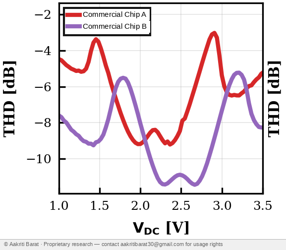

VTC view
Bias sweep to output swingTHD fingerprint
Measured silicon response (simulation & hardware)
64-bit response
Selected chip response
1 = above threshold
0 = below threshold
On a real chip: these bits never leave the die. They feed on-chip into a fuzzy extractor and Key Derivation Function (KDF), producing a cryptographic key consumed internally. The outside world sees only a signed attestation or challenge-response — never the raw PUF response. This is how Intrinsic ID BroadKey and Rambus CryptoManager work in production silicon.
DAC threshold
0
1
DAC
sets threshold value
below
above
Below threshold0
Above threshold1
What it shows
One glance summaryFingerprint
Commercial Chip A looks different from Commercial Chip B.
Each family leaves its own curve.
Unique
About half the bits flip across devices
That is the separation story in one picture.
Repeatable
The same chip stays close to itself
Good chips read the same way again.
Aging
NBTI can shift the fingerprint over time
That is why the aging view matters.
Aging / NBTI
Fresh chip versus stressed chip
Fresh
Baseline fingerprint
Baseline fingerprint
Stable
Aged
Drifted fingerprint
Drifted fingerprint
Shifted
Drift
How far the fingerprint moved
How far the fingerprint moved
0.00 dB
Fingerprint drift
Green = fresh, orange = agedFamilies apart
Mean THD versus variationHarmonic signature
HD3 versus HD2The story
Three quick stepsStep 1
Pick a family
Choose a chip family or a PDK to compare.
Step 2
Watch the curve
See the transfer curve and fingerprint update together.
Step 3
See the result
Read the response, the family map, and the aging drift.
Step 4
Compare chips
Separate one family from another at a glance.
Step 5
Check aging
See how stress shifts the fingerprint over time.